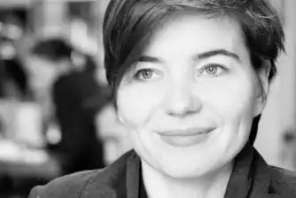
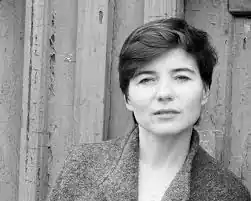
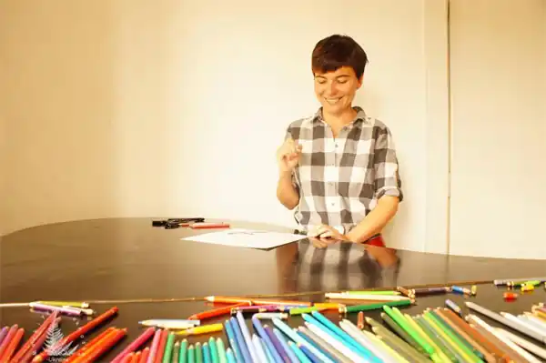

Народилася в місті Ужгороді у 1976 році. У дитячому віці разом з батьками переїхала до Івано-Франківська. У 1998 році закінчила англійську філологію Прикарпатського університету. З того часу займається індивідуальним викладанням англійської мови дітям різного віку та перекладами. Останні роки реалізує себе як ілюстраторка. Мар'яна Прохасько не є професійним художником.
У 2013 році у "Видавництві Старого Лева" вийшла книжка "Хто зробить сніг", співавторами якої виступили М. Прохасько і Т. Прохасько. Це перша дитяча книжка Т. Прохаська та перший досвід М. Прохасько у ролі ілюстратора[2]. Книжка стала переможцем конкурсу "Книга року ВВС — 2013" у номінації "Дитяча Книга року ВВС — 2013", а також отримала премію "ЛітАкцент року 2013" у номінації "Поезія і проза для дітей", посіла перше місце рейтингу "Книжка року'2013" у номінації "Дитяче свято". "Хто зробить сніг" потрапила до одного з найпрестижніших світових каталогів дитячих книжок "Білі круки — 2014" (The White Ravens 2014)[3].
У 2014 році вийшло продовження історії — "Куди зникло море". Книжка увійшла до 20 найкращих книг премії "Найкраща книга Форуму видавців"[4]. У 2015 році вийшла остання книжка "кротячої епопеї" — "Як зрозуміти козу". У 2016 році Мар'яна Прохасько розпочала свій авторський проект "Напиши мені книжку", втіленням якого займається "Видавництво Старого Лева". Суть проекту полягає в тому, що на запрошення Мар'яни Прохасько автори писатимуть тексти, які вона ілюструватиме. Першою в цій серії стала книжка "Сузір'я Курки", текст до якої написала Софія Андрухович. У виданні Прохасько майстерно поєднала ілюстрації з фотоматеріалом (фото — Олени Субач).